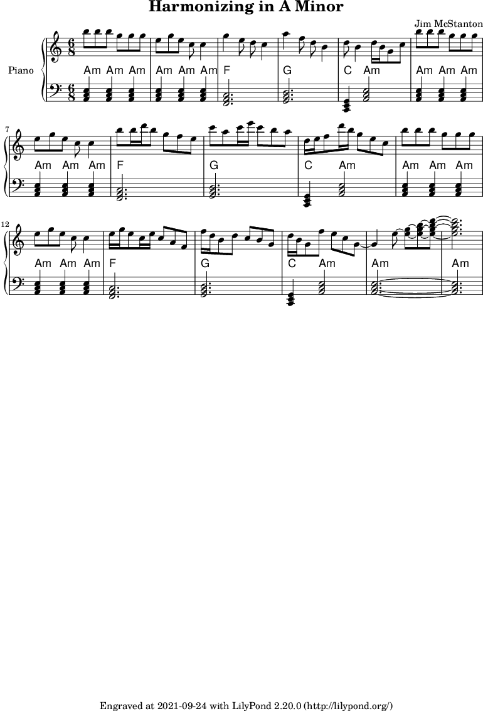

Had a hard time sleeping early this morning so put a couple of these together, then added a third one a bit later.
This first is a little melody in G Major, based around some ideas taken from a Coursera class around repetition.
This second one is playing around with harmonizing a chord in the melody using 7ths, 9ths, 11ths, etc.

This is just playing with the Harmonic Minor. When playing around on guitar the harmonic minor with its various half-steps between scale degrees sounds mysterious and interesting. Not sure that this was pulled off here by strictly writing it out, but a fun exercise nonetheless.